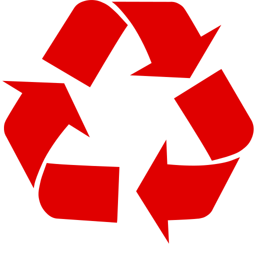
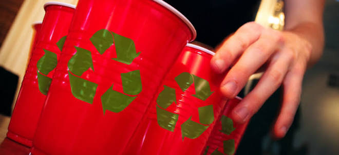

Volver a la página anterior Ir a la Portada Siguiente página: Problema ambiental
Consiste en disminuir el consumo de productos innecesarios y evitar los artículos con exceso de envolturas o de un solo uso. Ejemplos: llevar bolsas propias al supermercado o imprimir hojas por ambos lados.
Significa volver a usar un objeto para su misma función o para otra distinta antes de tirarlo, alargando su vida útil sin cambiar su material. Ejemplos: usar frascos de vidrio para guardar alimentos o donar ropa en buen estado.

Es el proceso de separar los residuos para que pasen por un tratamiento industrial y se conviertan en materia prima para fabricar productos nuevos. Ejemplos: separar botellas de plástico, latas de aluminio y cajas de cartón limpias.
